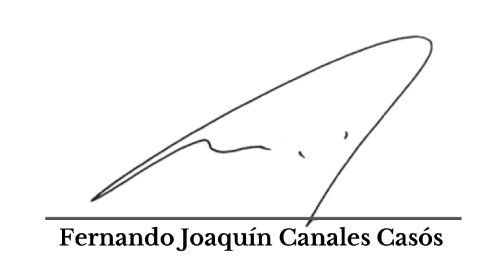
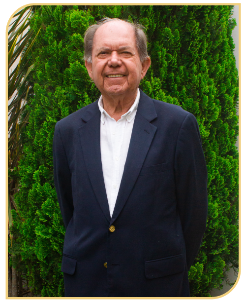
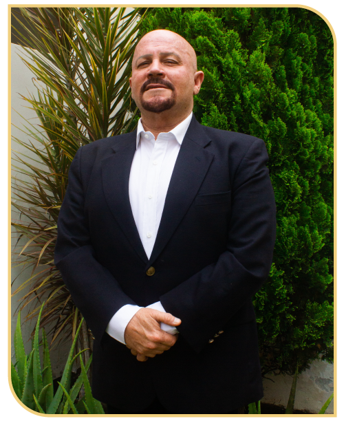
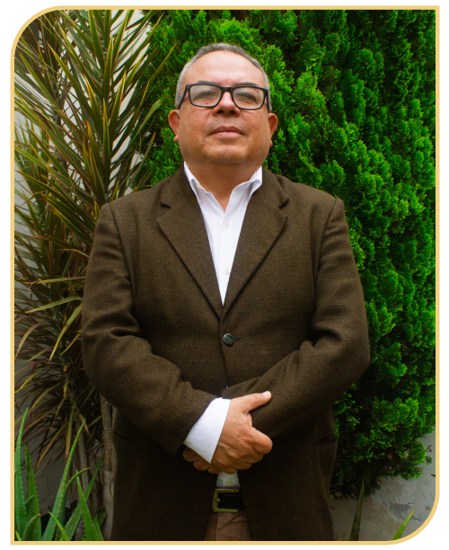
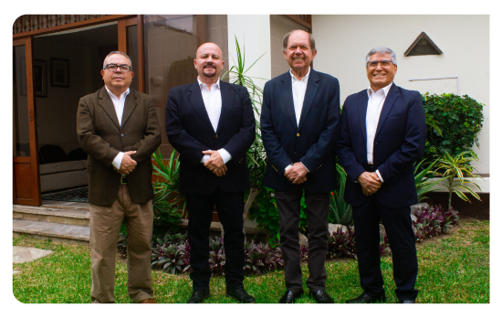
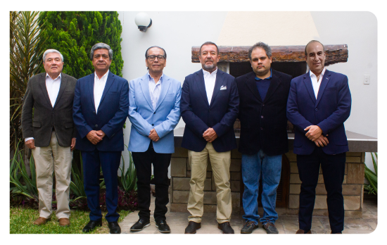

ELECCIONES 2024 - 2025
Después de 26 años, nuestro querido Club enfrenta una oportunidad histórica. Estas elecciones nos brindan la posibilidad de generar un cambio real en su gestión, en aras de lograr la renovación que nos permita, a todos los socios, construir el Club Central que anhelamos.
En los últimos tiempos nuestra comunidad ha crecido y cambiado; por esta razón, es evidente que el Club necesita una nueva dirección de apertura que lo impulse hacia adelante, manteniendo nuestras tradiciones y costumbres, pero que también, lo perfeccione con nuevos aportes de ideas, voluntades y esfuerzos, integrando a todos los socios, y logrando una mayor satisfacción de sus intereses e inquietudes.
Con tal fin, hemos constituido un equipo de calidad, con formación y experiencia profesional, con muchos años de vida institucional, como ustedes mismos lo pueden corroborar.
Esto nos anima a cumplir con el propósito de trabajar con el mayor empeño, para impulsar a nuestro Club con la vitalidad y el dinamismo necesarios, acordes con su Visión, de ser uno de los clubes más importantes del Perú. Pero, no solo con compromiso y responsabilidad frente a sus socios y familiares, sino también, con la historia, el arte y la cultura de la ciudad de Trujillo.
Nuestra propuesta, no es confrontativa sino integradora. Ella se encuentra contenida en el Plan de Trabajo que oportunamente hicimos de conocimiento de todos ustedes, así como la relación de integrantes de nuestra lista.
¡Ha llegado el momento para generar un cambio verdadero! Por esta razón, les pido su apoyo y su confianza para hacer realidad esta visión.
Convoco, con la mejor voluntad, a los socios que desean aportar lo mejor de cada uno, pero que, por diferentes razones, no han tenido la oportunidad de ser escuchados.
Finalmente, los invito para que todos juntos, y con el apoyo de sus votos, podamos lograr que el Club Central de Trujillo siga siendo un orgullo para nosotros y uno de los mejores emblemas de nuestra Región.
Coordialmente,

PRESIDENTE
VICEPRESIDENTE
TESORERO
PROTESORERO
SECRETARIO
PROSECRETARIO
BIBLIOTECARIO
VOCAL
VOCAL
VOCAL
VOCAL
VOCAL
VOCAL





Te alcanzamos nuestro Plan de Trabajo, cuyo objetivo es mejorar e integrar la atención el Socio y comprometerlo activamente con la Institución. Para ello, nos comprometemos a lo siguiente:
Todo lo anterior generará de ser necesario, efectuar aquello cambios en el manejo administrativo, operativo logistico, infraestructura, entre otros, con el compromiso de respetar y preservar todos aquellos usos, tradiciones y costumbres de nuestro Club y con los cuáles nos identificamos a tráves de los tiempos